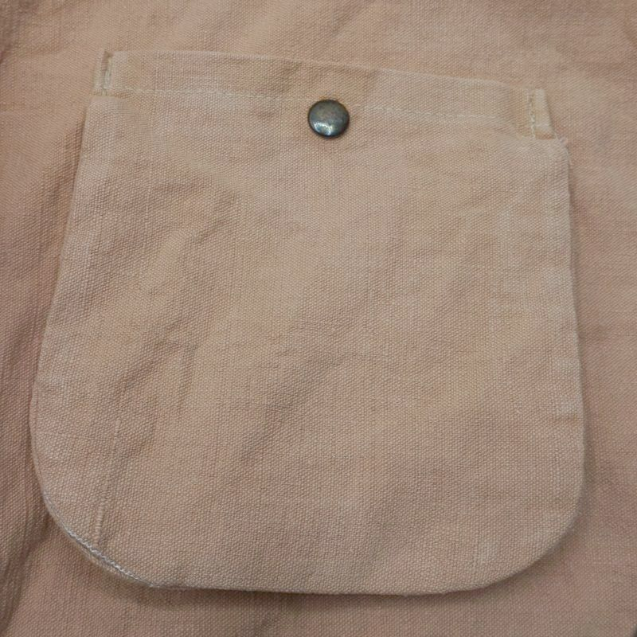
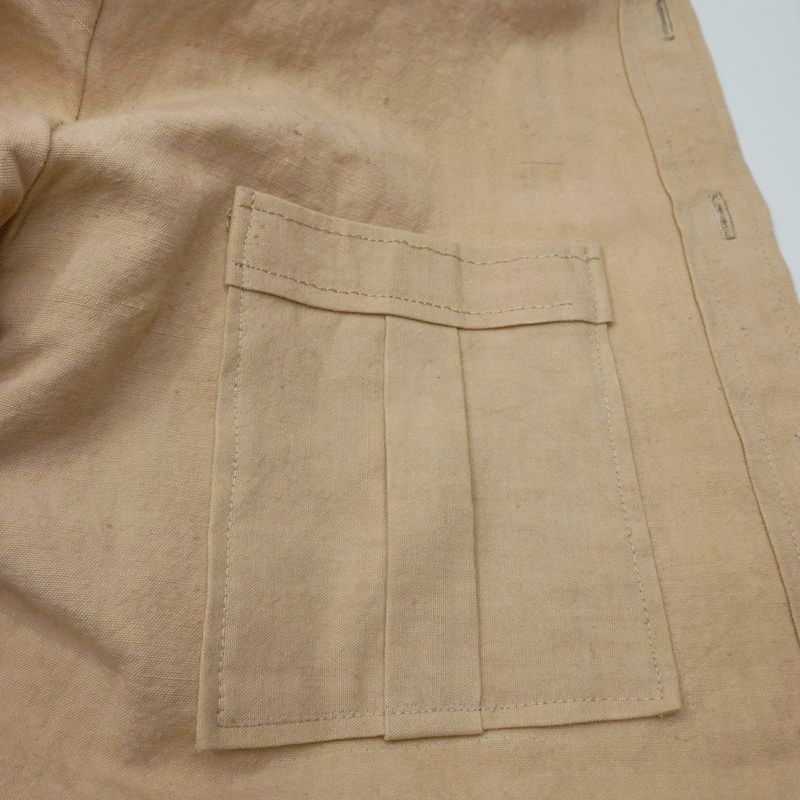
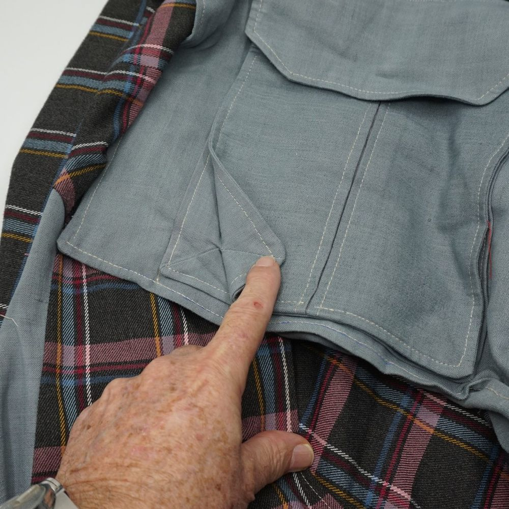

Poches plaquées
Choisissez votre modèle, du plus simple au plus élaboré. Les menus des options de base sont les mêmes pour tous les modèles : dimensions, forme du bas, rempli, revers, rabat et marge de couture. L'entrée de la poche peut être droite ou inclinée (biseau).

Poche simple
Sans soufflet : la plus rapide à réaliser.
Difficulté●○○○
Créer le patron

Soufflets latéraux
Deux plis sur les côtés pour agrandir la poche. En standard ou en une pièce.
Difficulté●●○○
Créer le patron

Soufflet central
Un pli au centre de la face, extérieur ou intérieur, avec revers ajouté.
Difficulté●●○○
Créer le patron

Double soufflet
Soufflets latéraux et pli central réunis, en standard ou rapportés.
Difficulté●●●○
Créer le patron